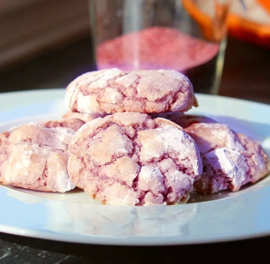

Purple Yam Cookies

Description:
These purple yam cookies are a delightful twist on traditional cookies, featuring the unique flavor and vibrant color of purple yams.
Ingredients:
- 2 cups all-purpose flour
- 1 cup butter, softened
- 3/4 cup granulated sugar
- 1 large egg
- 1 teaspoon vanilla extract
- 1/2 teaspoon ground cinnamon
- 1/4 teaspoon salt
- 1 cup mashed purple yams
Steps:
- Preheat your oven to 375°F (190°C).
- In a large mixing bowl, cream the butter and sugar until light and fluffy.
- Add the egg and vanilla extract, and mix until well combined.
- In a separate bowl, whisk together the flour, cinnamon, and salt.
- Gradually add the dry ingredients to the wet ingredients, mixing until just combined.
- Fold in the mashed purple yams until evenly distributed.
- Drop rounded tablespoons of dough onto ungreased baking sheets.
- Bake for 10-12 minutes, or until the edges are golden brown.
- Remove from the oven and let cool on the baking sheet for a few minutes before transferring to a wire rack. Enjoy!
Back to Home